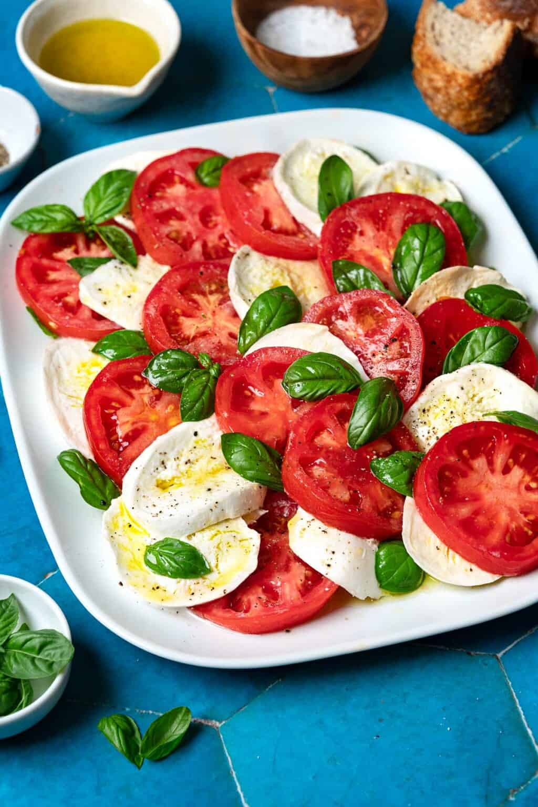

Caprese salad is a refreshing Italian starter that celebrates the beauty of fresh, simple ingrediants. Made with ripe, juicy tomatoes, creamy slices of mozzarella, fragrant fresh basil, and a drizzle of extra virgin olive oil, this salad offers a delightful combination of flavours.
Originating from the island of Capri, this beautiful salad reflects the heart of Italian cooking: quality ingrediants prepared with care and simplicity. Serve it freshly prepared to enjoy its natural flavours at their best, bringing a little taste of the Mediterranean to your table.
Ingredient
Ingredient
Ingredient
Step 1
Step 2
Step 3